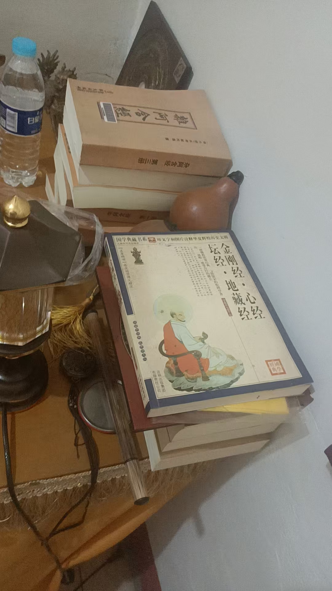
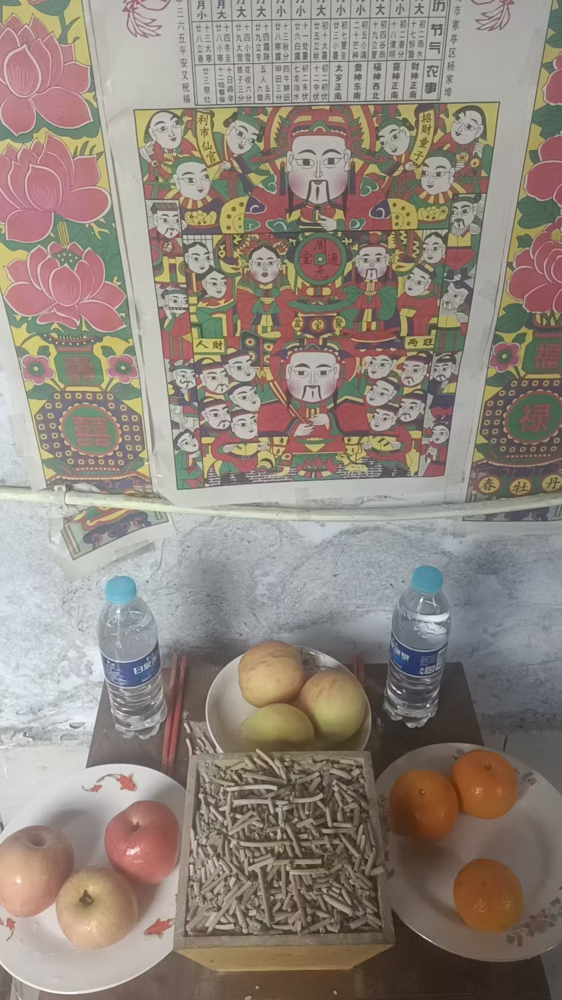

20260715练功的孩子，功能稳定，并且多样化
风水布局民间文化符咒术法得出一个结论，
练功的孩子，功能稳定，
并且多样化
这样路子就对了
到最后神通具足
长大了功能不会退化吗？
维次马首是瞻
啥意思，我现在56
功能还在夸夸夸的出
@林林 [呲牙][呲牙]
稳定且层出不穷
直到神通具足
爷爷周年
并且有一个大型法事要做
明天还有一个大型法事
[强][强][强]
收费过万的就叫大型法事
福主，一再嘱咐，一定要做好，做大
我说，按理说这类法事得收十几万
不管有钱没钱，我尽量少花，并不是做不好
今明这两家都不差钱
你看这家，小时候，姊妹五个，瘟疫死了两个哥哥一个姐姐，
三家堕胎七个
这就要化解十个阴灵
花钱少了怎么行
不过，除了酒食
所有物品都是纸扎的
花不了多少
出发
一语服人
为什么这么信任
这妇人说梦见爸妈了
我说，公墓，穿着艳丽，唯独嫌阴宅矮小，不如意
这妇人就说，对对，太对了
要知道，六十多岁，父母不一定是公墓
看的一定要清清楚楚
这么多学生里，能解读阴宅的，只有六个
不是看不到，而是看了浑身发凉
时间紧，一个红灯说一句[呲牙][呲牙]

阿含经，共九本

耳边就冒出，器具质而洁，瓦碚盛金玉
祖宗虽远，祭祀不可不诚
朱熹朱夫子治家格言
有天兵天将，你有养
[呲牙][呲牙][呲牙]
化亿咒
供养三千大千世界恒河沙数大千世界所有分身佛，菩萨
这一句是供完佛再供我